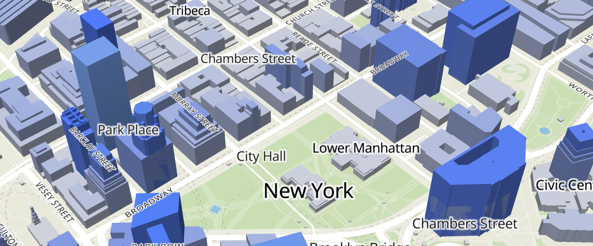
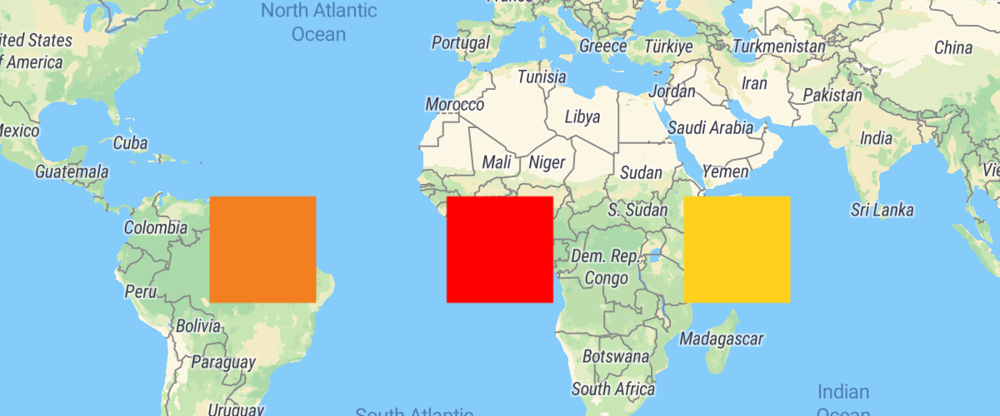
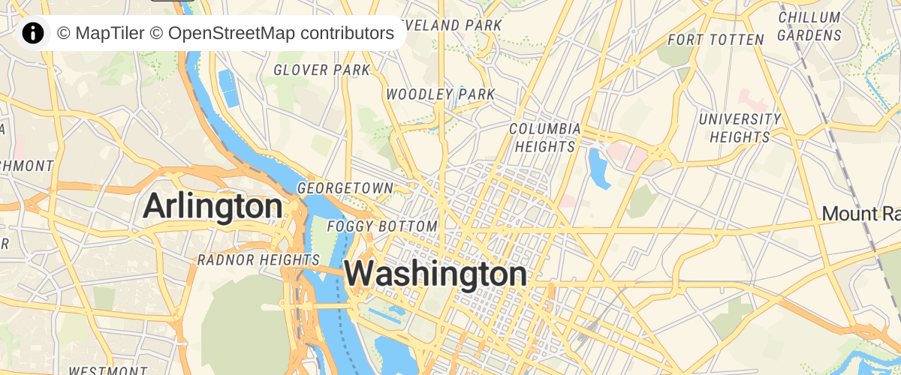
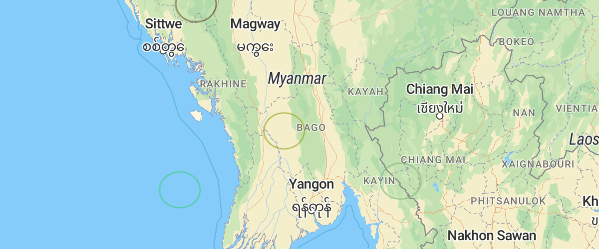
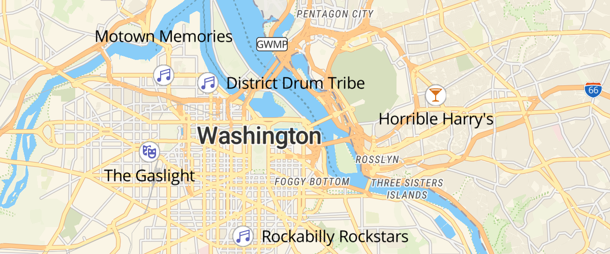

Overview
Display buildings in 3D

Use extrusions to display buildings' height in 3D.
Extrude polygons for 3D indoor mapping

Create a 3D indoor map with the fill-extrude-height paint property.
3D Terrain
Go beyond hillshade and show elevation in actual 3D.
Add a 3D model with babylon.js
Use a custom style layer with babylon.js to add a 3D model to the map.
Add a 3D model with three.js
Use a custom style layer with three.js to add a 3D model to the map.
Add a default marker
Add a default marker to the map.
Add an animated icon to the map
Add an animated icon to the map that was generated at runtime with the Canvas API.
Add a generated icon to the map
Add an icon to the map that was generated at runtime.
Generate and add a missing icon to the map

Dynamically generate a missing icon at runtime and add it to the map.
Add a stretchable image to the map
Use a stretchable image as a background for text.
Add an icon to the map
Add an icon to the map from an external URL and use it in a symbol layer.
Animate a line
Animate a line by updating a GeoJSON source on each frame.
Animate map camera around a point
Animate the map camera around a point.
Animate a series of images
Use a series of image sources to create an animation.
Animate a marker
Animate the position of a marker by updating its location on each frame.
Animate a point
Animate the position of a point by updating a GeoJSON source on each frame.
Animate a point along a route
Use Turf to smoothly animate a point along the distance of a line.
Change the default position for attribution

Place attribution in the top-left position when initializing a map.
Customize camera animations
Customize camera animations using AnimationOptions.
Add a canvas source

Add a canvas source to the map.
Center the map on a clicked symbol
Use events and flyTo to center the map on a symbol.
Change building color based on zoom level
Use the interpolate expression to ease-in the building layer and smoothly fade from one color to the next.
Change the case of labels
Use the upcase and downcase expressions to change the case of labels.
Check if MapLibre GL JS is supported
Check for MapLibre GL browser support.
Display HTML clusters with custom properties
Extend clustering with HTML markers and custom property expressions.
Create and style clusters
Use MapLibre GL JS' built-in functions to visualize points as clusters.
Change a layer's color with buttons
Use setPaintProperty to change a layer's fill color.
Add Contour Lines
Add contour lines to your map from a raster-dem source.
Cooperative gestures

Enable cooperative gestures with a specific language. See how it behaves in fullscreen mode.
Add custom icons with Markers
Add custom marker icons to your map.
Add a custom style layer
Use a custom style layer to render custom WebGL content.
Style lines with a data-driven property
Create a visualization with a data expression for line-color.
Disable map rotation
Prevent users from rotating a map.
Disable scroll zoom
Prevent scroll from zooming a map.
Display and style rich text labels
Use the format expression to display country labels in both English and in the local language.
Create a draggable Marker
Drag the marker to a new location on a map and populate its coordinates in a display.
Create a draggable point
Drag the point to a new location on a map and populate its coordinates in a display.
Use a fallback image
Use a coalesce expression to display another image when a requested image is not available.
Add a pattern to a polygon
Use fill-pattern to draw a polygon from a repeating image pattern.
Filter symbols by text input

Filter symbols by icon name by typing in a text input.
Filter symbols by toggling a list

Filter a set of symbols based on a property value in the data.
Fit a map to a bounding box
Fit the map to a specific area, regardless of the pixel size of the map.
Slowly fly to a location

Use flyTo with flyOptions to slowly zoom to a location.
Fly to a location
Use flyTo to smoothly interpolate between locations.
View a fullscreen map
Toggle between current view and fullscreen mode.
Navigate the map with game-like controls
Use the keyboard's arrow keys to move around the map with game-like controls.
Geocode with Nominatim
Geocode with Nominatim and the maplibre-gl-geocoder plugin.
Add a new layer below labels

Use the second argument of addLayer to add a layer below labels.
Add a GeoJSON line
Add a GeoJSON line to a map using addSource, then style it using addLayers paint properties.
Draw GeoJSON points
Draw points from a GeoJSON collection to a map.
Add a GeoJSON polygon
Style a polygon with the fill layer type.
Create a heatmap layer
Visualize earthquake frequency by location using a heatmap layer.
Create a hover effect
Use events and feature states to create a per feature hover effect.
Display a non-interactive map
Disable interactivity to create a static map.
Jump to a series of locations
Use the jumpTo function to showcase multiple locations.
Change a map's language
Use setLayoutProperty to switch languages dynamically.
Display line that crosses 180th meridian
Draw a line across the 180th meridian using a GeoJSON source.
Create a gradient line using an expression
Use the line-gradient paint property and an expression to visualize distance from the starting point of a line.
Add live realtime data
Use realtime GeoJSON data streams to move a symbol on your map.
Update a feature in realtime
Change an existing feature on your map in real-time by updating its data.
View local GeoJSON (experimental)
View local GeoJSON with experimental File System Access API.
View local GeoJSON
View local GeoJSON without server upload.
Use locally generated ideographs
Set localIdeographFontFamily to override the font used for displaying CJK (Chinese, Japanese and Korean) characters, ignoring the map style. This setting must be a CSS font rule specifying fallbacks of on-device fonts. Set localIdeographFontFamily to false to use server-provided fonts, which is much slower.
Locate the user
Geolocate the user and then track their current location on the map using the GeolocateControl.
Add a raster tile source
Add a third-party raster source to the map.
Show drawn polygon area
Use mapbox-gl-draw to draw a polygon and Turf.js to calculate its area in square meters.
Add support for right-to-left scripts
Use the mapbox-gl-rtl-text plugin to support right-to-left languages such as Arabic and Hebrew.
Measure distances
Click points on a map to create lines that measure distanced using turf.length.
Get coordinates of the mouse pointer
Show mouse position on hover with pixel and latitude and longitude coordinates.
Add multiple geometries from one GeoJSON source
Add a polygon and circle layer from the same GeoJSON source.
Display map navigation controls
Add zoom and rotation controls to the map.
Offset the vanishing point using padding
Offset the center or vanishing point of the map to reduce distortion when floating elements are displayed over the map.
Show polygon information on click
When a user clicks a polygon, show a popup containing more information.
Display a popup on click
When a user clicks a symbol, show a popup containing more information.
Display a popup on hover
When a user hovers over a custom marker, show a popup containing more information.
Display a popup
Add a popup to the map.
Get features under the mouse pointer
Use queryRenderedFeatures to show properties of hovered-over map elements.
Render world copies
Toggle between rendering a single world and multiple copies of the world using setRenderWorldCopies.
Restrict map panning to an area
Prevent a map from being panned to a different place by setting maxBounds.
Display a satellite map
Display a satellite raster baselayer.
Fly to a location based on scroll position
Scroll down through the story and the map will fly to the chapter's location.
Set pitch and bearing
Initialize a map with pitch and bearing camera options.
Attach a popup to a marker instance
Attach a popup to a marker and display it on click.
Display a map
Initialize a map in an HTML element with MapLibre GL JS.
Create a time slider
Visualize earthquakes with a range slider.
Toggle interactions
Enable or disable UI handlers on a map.
Variable label placement
Use text-variable-anchor to allow high priority labels to shift position to stay on the map.
Variable label placement

Use text-variable-anchor-offset to allow high priority labels to shift position to stay on the map.
Add a vector tile source
Add a vector source to a map.
Add a video
Display a video on top of a satellite raster baselayer.
Visualize population density
Use a variable binding expression to calculate and display population density.
Add a WMS source

Add an external Web Map Service raster layer to the map using addSource's tiles option.
Fit to the bounds of a LineString

Get the bounds of a LineString.